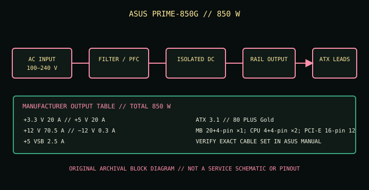

[ POWER CONVERSION // IDENTIFIED ASUS MODEL ]
ASUS PRIME-850G
This record covers the manufacturer-listed model PRIME-850G only. Do not treat same-family wattage variants, suffixes, regional assemblies or revisions as interchangeable.

HIGH-VOLTAGE SAFETY: Disconnect mains before external inspection. Never open or probe a PSU. Internal capacitors may retain hazardous charge after disconnection. Use qualified service or replace the complete unit.
Model-specific input & output specifications
| Manufacturer model | ASUS PRIME-850G | ||||||||||||||||||
|---|---|---|---|---|---|---|---|---|---|---|---|---|---|---|---|---|---|---|---|
| Form factor / ATX generation | ATX12V; ATX 3.1 | ||||||||||||||||||
| Efficiency class / protection | 80 PLUS Gold; ASUS lists OPP, OVP, UVP, SCP, OCP and OTP. | ||||||||||||||||||
| AC input | 100–240 V AC; ASUS does not publish line frequency or maximum input current on this specifications page—check the unit nameplate and regional manual. | ||||||||||||||||||
| Total DC output | 850 W maximum total output as listed by ASUS. Per-rail ceilings and combined limits are in the table below. | ||||||||||||||||||
| Rail ratings |
| ||||||||||||||||||
| Connector inventory | MB 20+4-pin ×1; CPU 4+4-pin ×2; PCI-E 16-pin 12V-2x6 ×1; PCI-E 6+2-pin ×3; SATA ×5; peripheral ×4. | ||||||||||||||||||
| Dimensions | 150 × 150 × 86 mm (manufacturer dimensions; verify orientation and chassis clearance). | ||||||||||||||||||
| Catalog scope | Manufacturer model identity is the ASUS specification-page model name; match the unit label and correct regional manual before installation. |
Compatibility & safe handling
- The PRIME-850G specification names one PCI-E 16-pin 12V-2x6 lead and three 6+2-pin leads. It is not the AP-850G cable map; use only the correct model’s cable bundle and manual.
- Check motherboard ATX and CPU EPS requirements, GPU connector type and current rating, total system demand, chassis envelope, airflow, screw pattern and cable bend room; the ATX exterior alone does not prove electrical or mechanical fit.
- Use only detachable PSU cables documented for this exact model. Modular-side pinouts are not standardized, including within one manufacturer’s product family; never swap leads based on connector shape alone.
- Check the actual nameplate for mains frequency, maximum line current and regional certification. Do not operate outside its AC input rating or use a damaged, wet, modified or unidentified supply.
- Do not use unapproved adapters to create a different GPU input. Follow the graphics-card maker’s cabling and clearance requirements and this PSU’s ASUS manual.
- Never open the supply, test internal circuitry or handle internal capacitors. Replace a suspect PSU as a unit or refer it to qualified service.
Revision & documentation notes
The PRIME-850G specification names one PCI-E 16-pin 12V-2x6 lead and three 6+2-pin leads. It is not the AP-850G cable map; use only the correct model’s cable bundle and manual. Manufacturer specifications are family references; verify the full model marking, local market version and any revision label on the physical PSU. ASUS may revise product documentation; use the manual corresponding to the exact product listing rather than a similarly named wattage model.
Manufacturer sources
- ASUS official product page: ASUS PRIME-850GPrimary manufacturer model page. Confirm product identity and the available regional support information.
- ASUS official technical specifications: PRIME-850GModel-specific AC input range, DC rail ceilings, combined outputs, connector inventory, dimensions and stated ATX standard.
- ASUS official manual download/support page: PRIME-850GManufacturer support lookup for the product’s manual and installation guidance; confirm the matching model/region before use.
Where this summary and the physical unit label or correct ASUS manual differ, stop and resolve the model/revision before connecting equipment.